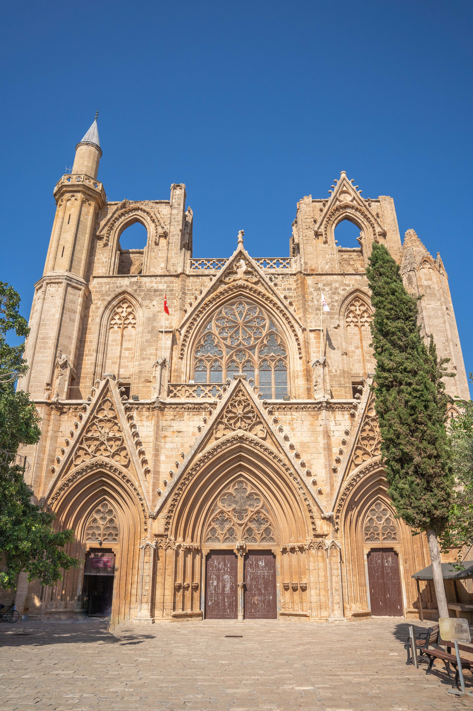

Top Beaches
North Cyprus is home to some of the Mediterranean’s most beautiful beaches: Golden Beach in Karpaz, Alagadi Turtle Beach, Escape Beach, Glapsides and more. Crystal-clear water, soft sand and peaceful nature await you.


